跨学科协作
合成生物学、计算机建模、硬件设计与社会调查成员协同推进，形成从元件到社会的完整闭环。
Loading…
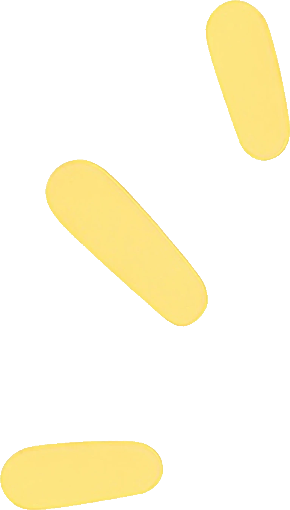
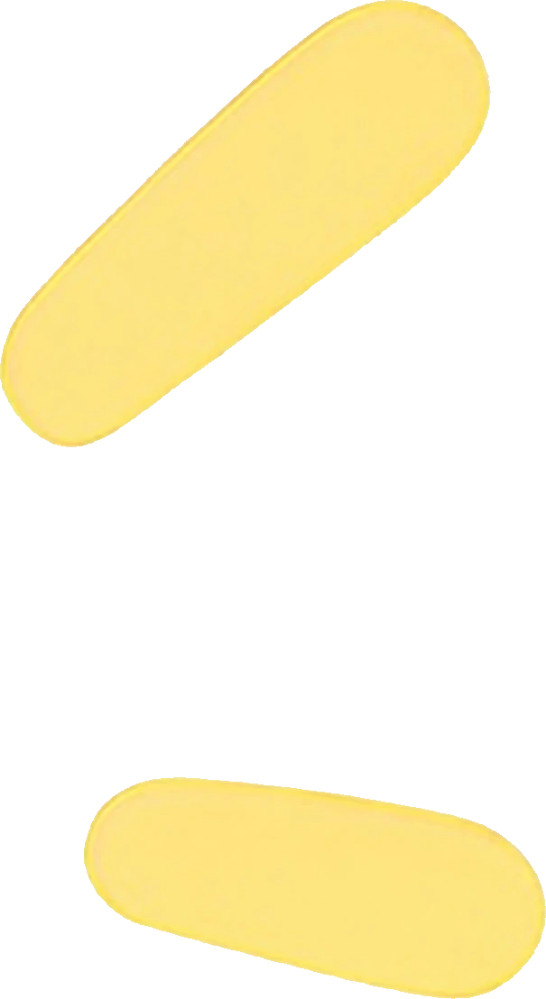
ECHO = Engineered Cellular Host Observation of viral signals

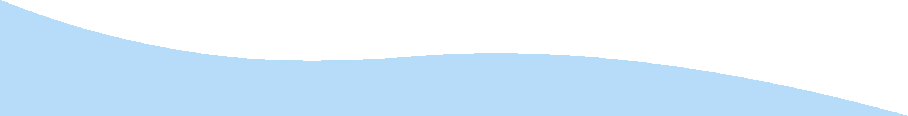
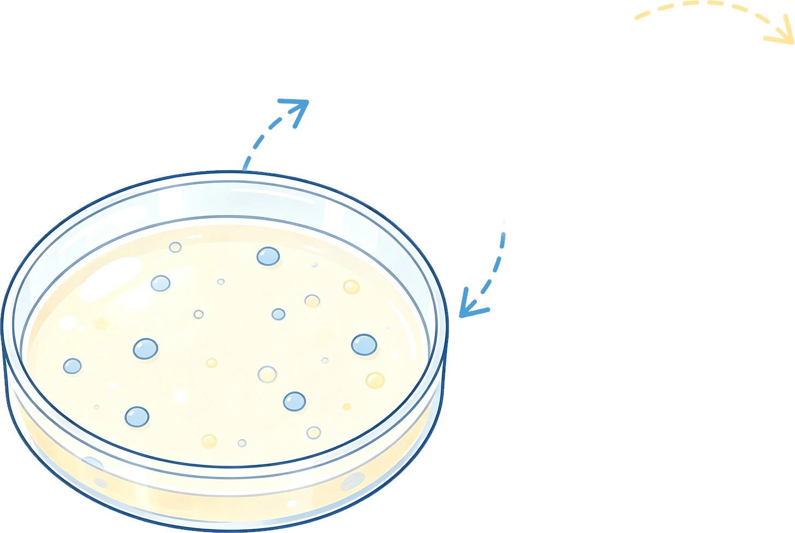

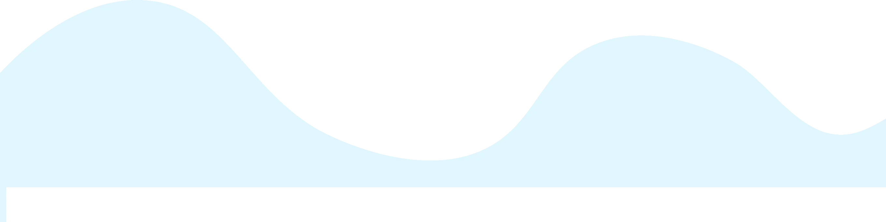
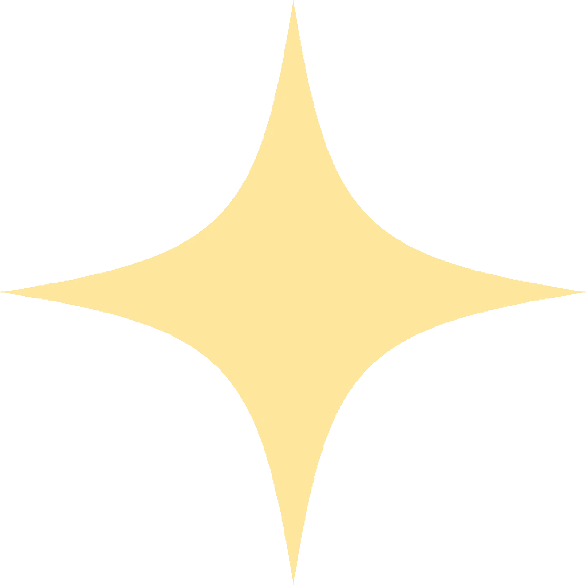
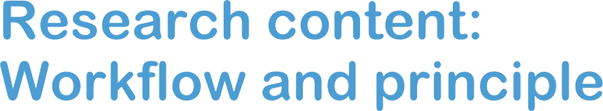
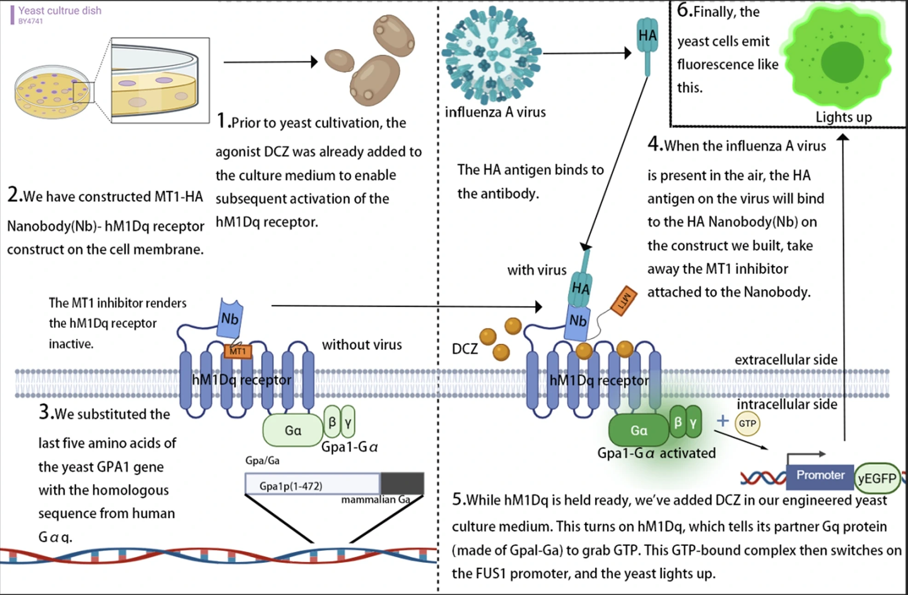


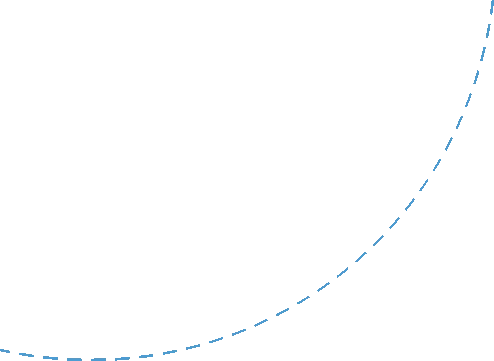


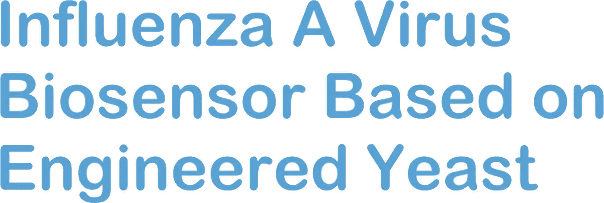
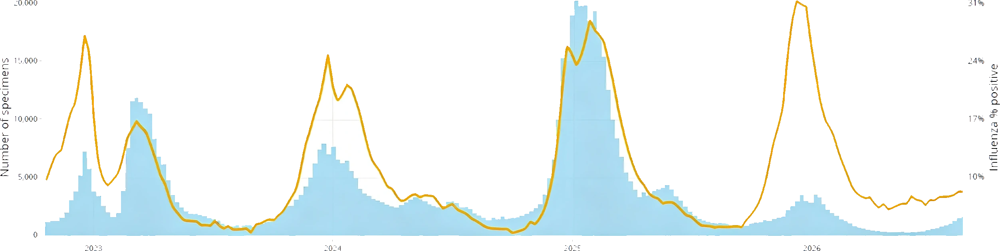

完成 H1N1 概念验证后，PAGER-Yeast 平台的核心价值在于其模块化与可替换性：膜表面的纳米抗体识别单元可针对不同抗原快速迭代，而下游的 GPCR 信号重布线与双模式报告系统保持通用。结合低成本便携式荧光读数设备，该体系有望从实验室原型走向基层可用的现场检测工具。
[待补充：目标拓展亚型列表、硬件原型参数、产品化时间表与监管路径初步评估]
合成生物学、计算机建模、硬件设计与社会调查成员协同推进，形成从元件到社会的完整闭环。
每个设计决策均对应可测试假设与迭代计划，确保项目可追溯、可复现、可改进。
专家与公众反馈持续塑造项目目标与产品形态，使技术方案贴近真实使用场景。